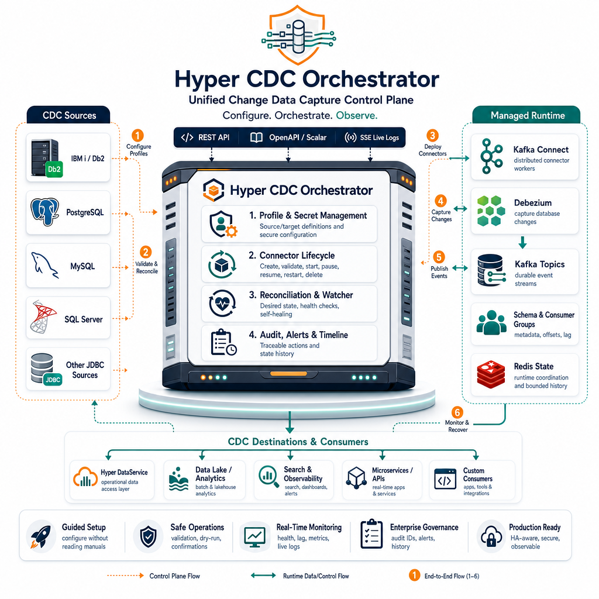
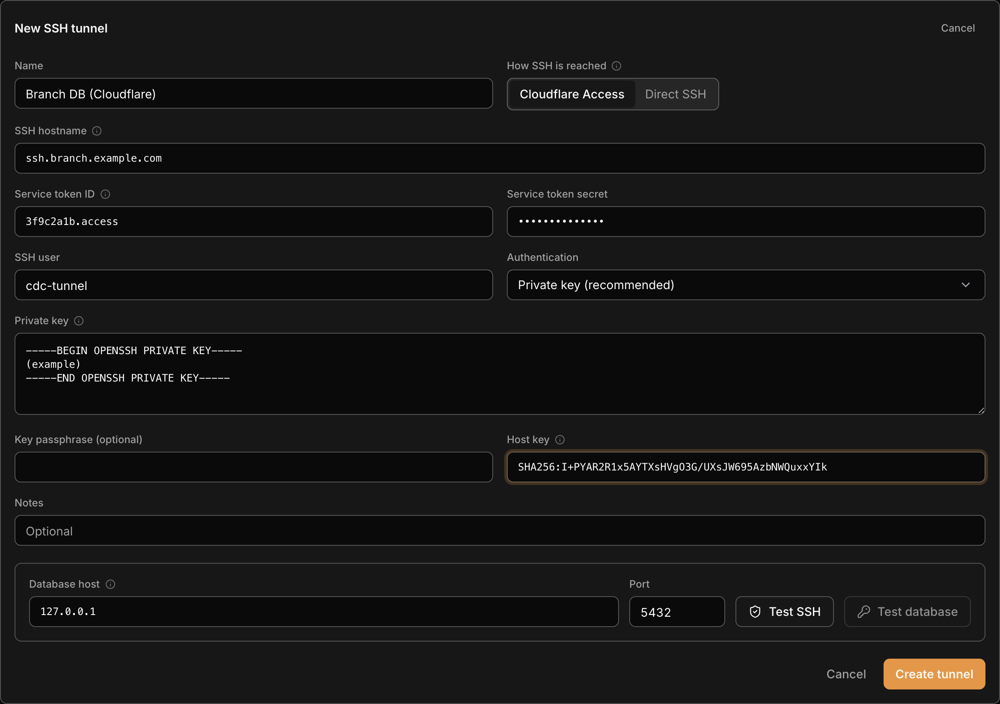
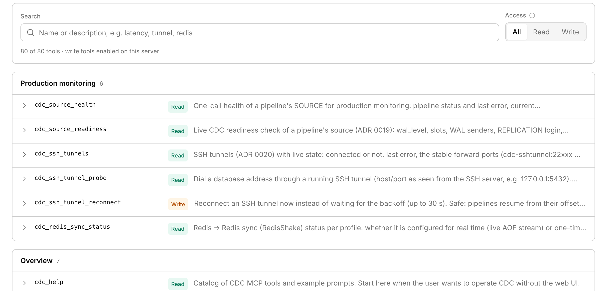
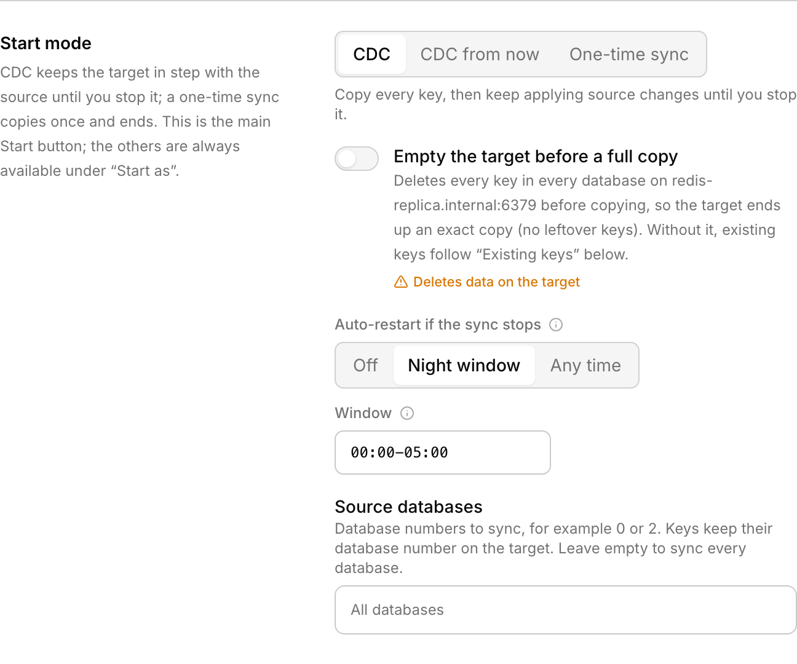

Hyper CDC Orchestrator captures inserts, updates and deletes from PostgreSQL, MySQL, SQL Server and Oracle, and delivers them to replicas, event streams and lakehouses. Set it up in a guided UI, keep it inside your network, and operate it from your AI assistant.
Hyper CDC Orchestrator sits between your databases and the systems that need their data. It configures the capture, runs it on a managed runtime, and watches it until you stop it.
Sources, targets and secrets in a guided wizard, checked against the live database before anything starts.
Connectors are created, started, paused, resumed and removed for you; their state is reconciled continuously.
Health, lag, latency and an audit timeline, with alerts and automatic recovery when something drifts.

Replace nightly exports and fragile scripts with a governed, always-on data flow that a DBA is comfortable putting on a production database.
Streaming reads the transaction log the database already writes. No queries on your tables, no triggers required. The heavy first copy is planned for your night window.
A guided wizard goes from database to database, with no connector JSON to write. Schema mapping, target table DDL and Oracle-to-PostgreSQL types are generated for you.
Take the replication slot first, load with a parallel dump and restore, then stream from the exact log position. Built for databases too big for a simple snapshot, without losing a single change.
A live readiness check names exactly what the source needs, with fixes for self-managed, RDS, Aurora, Cloud SQL and Azure. Verify Record compares source and target row by row.
Failed connector tasks restart automatically when the network is back, and real-time Redis syncs recover inside your night window. Every action is alerted and audited.
Self-hosted on your servers or cloud account. Secrets are encrypted at rest and never shown back. SSO, a full audit trail and per-client AI access keys come built in.
Sources stay where they are: on-premises, in a branch office, or in the cloud. Hyper CDC reaches them over the connection you allow, streams every change through a durable event backbone, and delivers it where your teams need it.
A read-only readiness check reads WAL, binlog or CDC settings, permissions and keys, and gives the exact fix for your platform.
Direct, SSH tunnel (including Cloudflare Zero Trust) or WireGuard. Host keys are pinned and secrets encrypted.
Snapshot small databases automatically. For large ones, take the slot first, load in parallel at night, then stream from the exact position.
Verify Record proves source and target match. Latency, alerts, auto-recovery and AI-assistant checks keep it that way.
Built from real production rollouts: the things other tools leave to scripts, runbooks and luck are built in.
Connect through an SSH tunnel, even behind Cloudflare Zero Trust, or a WireGuard site tunnel. No inbound database port, with stable tunnel addresses that survive restarts.
80 MCP tools let Claude, ChatGPT or Cursor answer "is the source healthy?" or "is the slot holding WAL?", with read-only keys for users and every action audited.
Read-only readiness checks, night-window restarts, and a slot guard: deleting a pipeline drops its replication slot, so WAL can never quietly fill the source disk.
Slot-first initial loads with parallel dump and restore, then streaming from the exact LSN, binlog or SCN. Built for databases too big for a simple snapshot.
Record-level diff between source and target by key, plus measured end-to-end latency per pipeline. Show auditors proof instead of row-count guesses.
When you may not change the source (no LogMiner grants, no triggers), rolling-window polling and streaming initial loads still keep the target in step.
Continuous CDC plus Copy & Sync: PostgreSQL dump and restore, pgcopydb, pgloader, MongoDB copy, real-time Redis sync, file sync and AI vector sync.
Self-hosted on open foundations (Debezium, Kafka Connect, Redpanda, Apache Iceberg). Your data, your network, your infrastructure.
A general comparison with the typical approaches teams evaluate.
| Capability | Hyper CDC Orchestrator | Hosted SaaS replication | DIY Debezium + Kafka |
|---|---|---|---|
| Data stays inside your network | ✓Self-hosted | Usually passes through the vendor | ✓ |
| Sources with no open port | ✓SSH · Cloudflare Zero Trust · WireGuard | Usually needs inbound access or an agent | Build it yourself |
| Guided setup, no config files | ✓Wizard + live readiness check | ✓ | Connector JSON by hand |
| Large-DB load without a data gap | ✓Slot-first + start from LSN | Varies | Manual runbook |
| Record-level verification | ✓Verify Record | Varies | Scripts |
| Self-healing and slot guard | ✓Auto-recover · WAL-safe delete | Varies | Manual |
| AI-assistant operations (MCP) | ✓80 tools, scoped keys, audit | Rare | No |
| Cost model | Your infrastructure | Often priced by data volume | Your infrastructure + engineering time |
Hyper CDC speaks the Model Context Protocol (MCP), so your team can check production from Claude, ChatGPT or Cursor in plain language.
cdc_source_health on 3 running pipelines, cdc_ssh_tunnels and cdc_redis_sync_status.cdc_source_readiness: 1 problem. pg.identity: two tables have no primary key. Fix: ALTER TABLE … REPLICA IDENTITY FULL;Take a tour of the console, from the health overview to a pipeline built step by step: source, transform, target, table and column mapping, then review.



We run the readiness check on your source with you, plan a no-gap initial load, and show the first changes arriving, in your environment.